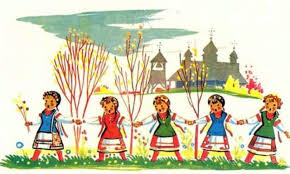
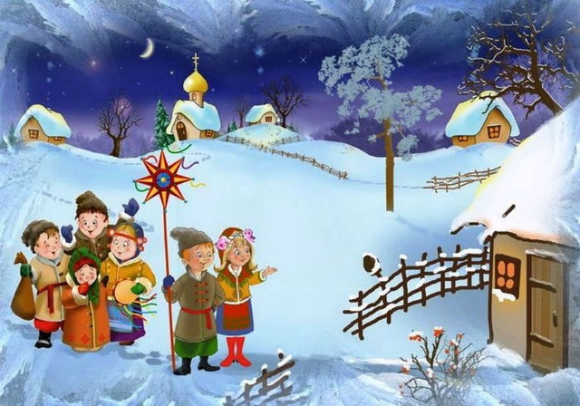
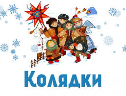

Гаївки
Гаївки — термін, який має кілька значень. Ця сторінка значень містить посилання на статті про кожне з них.
Щедрівка
Традиційно різниця між колядками, щедрівками та засівалками суттєва. Колядки виконують на Різдво — 6-7 січня, щедрують — напередодні старого Нового року, 13 січня[1], а от засівають вже в перший день Нового року (старого Нового року), тобто 14 січня[2]. В окремих регіонах існує традиція щедрувати і напередодні свята Хрещення Господнього (Водохреща) 18 січня[3]. В колядках здебільшого прославляють народження Христа, а щедрівками бажають добробуту родині, багатого урожаю тощо[1]. Засівалки за змістом схожі на щедрівки. Однак їх співають вранці 14 січня, на свято святого Василя. Це чітко відображається в текстах: якщо у щедрівках є постійне повторення слів про «добрий вечір» або «щедрий вечір», то в схожих за змістом та побажаннями засівалках повторюється «Сію-вію, посіваю» та подібні слова, адже саме вранці на Новий рік традиційно хлопці засівають зерном хати сусідів та родичів, приспівуючи відповідні обрядові пісні. Окрім того, у деяких засівалках згадується Святий Василь. Також більш традиційним вважається колядування у виконанні чоловіків та хлопців, тоді як щедрувати за звичаєм мають жінки та дівчата[3].
Колядка
Соответствия восточно-славянским колядкам встречаются в фольклоре всех других славянских, да и многих других европейских народов. Особенно близки и по сюжетам, и по форме к славянским колядкам румынские, называемые colinda, ср. чешское и словацкое название песен — koleda, польское — kolęda, словинское kolednica, coleda, сербское — koleda, kolenda, албанское — kolĕndŭ. Считается, что перечисленные названия песен восходят к названию римского новомесячия — Kalendae. Название новолетия у многих народов было перенесено на праздник Рождества Христова (болгарское — колада, коляда, коленде, французское — tsalenda, chalendes, charandes, провансальское — calendas) или на канун этого праздника (русское, украинское, белорусское — коляда). Подробное сравнение новогодних и святочных празднеств европейских народов с древними греко-римскими праздниками обнаруживает не только сходство названий, но и совпадение отдельных моментов обрядов, увеселений и пр.[3].